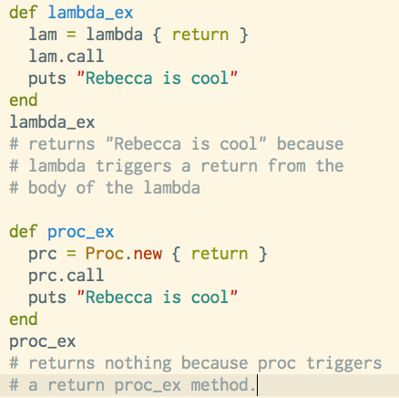
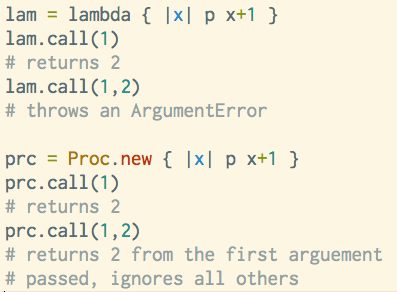

Chock-o-Proc
Blocks, Procs, Lamdas, and How They All Relate
When learning Ruby, you spend a lot of time working with methods and code blocks. Within Ruby there is an object that ties these two concepts together, the Proc object. The Proc object is a special object that has the specific purpose to provide access to execute a previously defined block of code. A code block, which is not an object, can to act like an object when converted to a proc, and then we can use the proc in place of blocks.

A lambda is a proc, but it's a special kind of proc. It's considered "fussy" because it has rules and requirements that are more precise than whats required for a proc. For one, they require explicit creation. This means that any Proc object that is created will be a proc. If you want to create a Proc object that is a lambda, it must be specified. In addition, procs and lambdas treat the return keyword differently in that the return keyword inside a lambda will execute a return just outside of the lambda code and the return keyword inside a proc will execute a return outside of the method where the proc is being executed.
The third difference between a lambda and a proc is that, while a proc will not check the number of arguements given, the lambda will, and will throw an error if there is the wrong number of arguments. This is why is is considered "fussy".
Procs and lambdas are closures, which means they are objects that contain a block of code that is executed whenever ever they are called